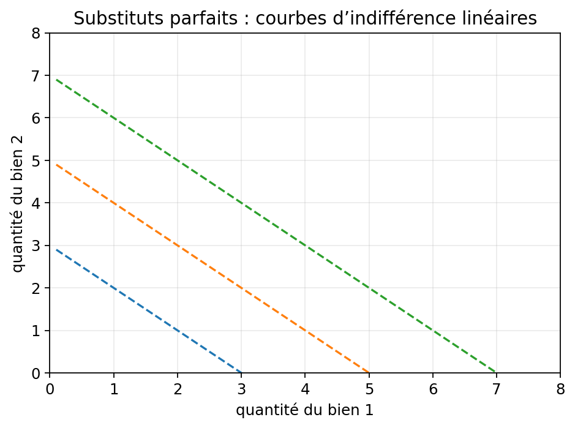
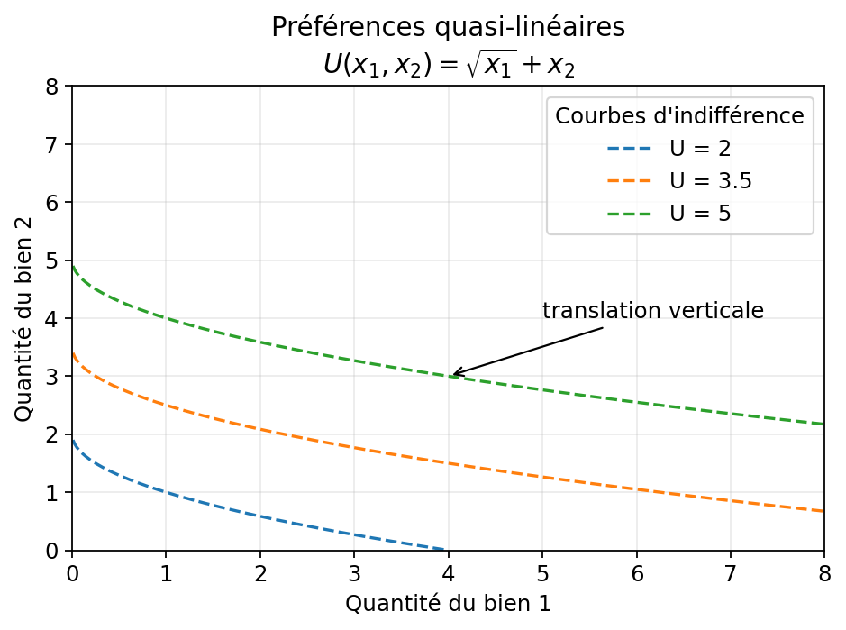
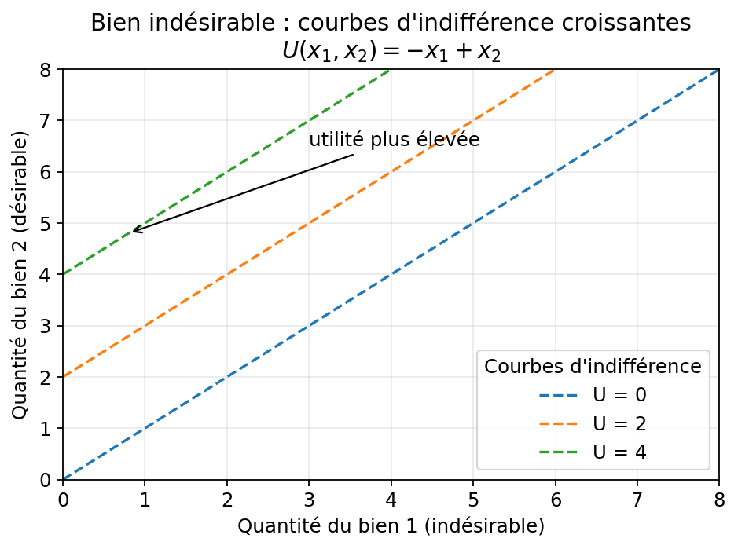
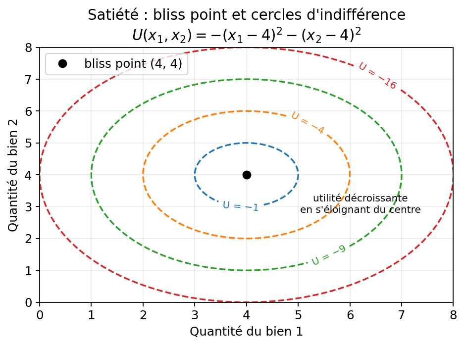

Au chapitre 2, on a vu comment comparer des paniers situés sur des courbes d’indifférence différentes : la courbe la plus éloignée de l’origine est préférée. Mais que se passe-t-il entre deux paniers situés sur la même courbe d’indifférence ?
Le consommateur est indifférent entre eux — par définition. Pourtant, il peut encore exprimer quelque chose : à quel taux est-il prêt à échanger une unité d’un bien contre de l’autre, tout en restant au même niveau de bien-être ? Comment mesurer cet arbitrage ?
Ce chapitre est aussi l’occasion de voir concrètement comment les axiomes de préférence posés au chapitre 1, notamment la monotonie et la convexité, se traduisent géométriquement sur les courbes d’indifférence, et dans quels cas on y déroge (biens indésirables, satiété, modèles des substituts et compléments parfaits).
Le taux marginal de substitution mesure le compromis que le consommateur est prêt à faire le long d’une même courbe d’indifférence. Il traduit une logique de préférences, pas encore une logique de marché.
L’utilité marginale du bien 1 est :
\[ U_1'(x_1,x_2)=\frac{\partial U}{\partial x_1} \]
Elle indique de combien l’utilité varie quand \(x_1\) augmente un peu, toutes choses égales par ailleurs.
De même :
\[ U_2'(x_1,x_2)=\frac{\partial U}{\partial x_2} \]
Sur une courbe d’indifférence, l’utilité reste constante, donc :
\[ dU=U_1' dx_1+U_2' dx_2=0 \]
D’où :
\[ \frac{dx_2}{dx_1}=-\frac{U_1'}{U_2'} \]
Le TMS est défini comme :
\[ TMS_{1,2}=-\frac{dx_2}{dx_1}=\frac{U_1'}{U_2'} \]
Lecture analytique : le TMS est l’opposé de la pente de la courbe d’indifférence.
Lecture économique : le TMS dit combien d’unités du bien 2 le consommateur est prêt à sacrifier pour obtenir une unité supplémentaire du bien 1, sans changer de niveau d’utilité.
Le signe du TMS \(= U_1'/U_2'\) dépend directement des utilités marginales, et donc de la nature des biens en jeu :
| \(U_1'\) | \(U_2'\) | \(TMS\) | Situation |
|---|---|---|---|
| \(+\) | \(+\) | \(> 0\) | Cas standard — deux biens désirables. La courbe est décroissante. |
| \(-\) | \(+\) | \(< 0\) | Bien 1 indésirable (bad). La courbe est croissante. |
| \(+\) | \(-\) | \(< 0\) | Bien 2 indésirable. La courbe est croissante. |
| \(-\) | \(-\) | \(> 0\) | Les deux biens sont indésirables. La courbe est décroissante, mais l’optimum est en coin (zéro des deux). |
Un TMS positif se traduit géométriquement par une courbe décroissante ; un TMS négatif, par une courbe croissante.
Un bien est désirable si son utilité marginale est positive : \(U_i' > 0\). Consommer davantage améliore la situation. C’est le cas standard où l’axiome de monotonie des préférences (cf. chapitre 1) est vérifié: un individu préfère plus à moins d’un bien.
Un bien est neutre si sa quantité n’affecte pas l’utilité : \(U_i'=0\). Les courbes d’indifférence sont des droites parallèles à l’axe du bien neutre.
Définition. Un bien est indésirable (bad) si son utilité marginale est négative : \(\partial U/\partial x_1 < 0\). Consommer davantage de \(x_1\) réduit l’utilité.
Courbe d’indifférence. Pour rester au même niveau d’utilité quand \(x_1\) augmente (ce qui réduit l’utilité), il faut plus de \(x_2\) pour compenser. La courbe est donc croissante — à l’inverse du cas standard. Attention ici l’axiome de “monotonie” (cf. chapitre 1), plus c’est mieux, n’est pas respecté, en effet, cet axiome suppose des biens désirables et veut en réalité exprimer une croissance.
TMS. Puisque \(U_1' < 0\) et \(U_2' > 0\):
le TMS \(= U_1'/U_2'\) est négatif. La pente \(dx_2/dx_1 = -U_1'/U_2'\) est positive.
Exemple canonique. La pollution \(x_1\) et le revenu \(x_2\) : pour accepter davantage de pollution, il faut être compensé par davantage de revenu. C’est le principe des prix hédonistes et de la valorisation des externalités négatives.
Optimum. Si le consommateur peut librement choisir sa quantité de bien indésirable \(x_1\), il en prend zéro : c’est un optimum en coin, «moins est mieux et zéro est encore mieux». Si \(x_1\) est subi — comme la pollution — il n’est pas choisi mais imposé ; le consommateur n’optimise alors que sur \(x_2\).
Modèle. Le consommateur valorise les deux biens et préfère la diversité : plus il possède déjà d’un bien, moins il est prêt à en sacrifier encore pour obtenir davantage de l’autre. C’est le cas standard, avec un TMS qui varie le long de la courbe d’indifférence. Ce modèle est le cas standard systématiquement utiliser dans les exemples graphiques. Il illustre les axiomes de monotonie et convexité.
\[ U(x_1,x_2)=x_1^\alpha x_2^\beta \]
On calcule les utilités marginales :
\[ U_1'=\alpha\, x_1^{\alpha-1} x_2^{\beta}, \qquad U_2'=\beta\, x_1^{\alpha} x_2^{\beta-1} \]
Le TMS vaut :
\[ TMS=\frac{U_1'}{U_2'}=\frac{\alpha\, x_2}{\beta\, x_1} \]
Pourquoi le TMS est décroissant. Avec des préférences convexes, \(x_1\) augmente et \(x_2\) diminue simultanément le long de la courbe. Les deux effets se renforcent : \(x_2\) au numérateur baisse, \(x_1\) au dénominateur monte — le TMS \(= \alpha x_2 / (\beta x_1)\) diminue nécessairement. La traduction économique du TMS décroissant est une substituabilité décroissante : plus on possède déjà du bien 1, moins il faut de bien 2 pour compenser l’ajout d’une unité supplémentaire de bien 1 — en restant sur la même courbe d’indifférence.
Comportement aux extrêmes. Les courbes s’approchent asymptotiquement des deux axes, ce qui reflète le fait que le TMS varie de \(+\infty\) à \(0\) :
La convexité, c’est précisément ce passage continu et décroissant du TMS de \(+\infty\) à \(0\) le long de chaque courbe.
Forme canonique.
\[ U(x_1,x_2)=v(x_1)+x_2 \]
où \(v\) est croissante et concave (\(v'' < 0\)).
On calcule les utilités marginales :
\[ U_1' = v'(x_1), \qquad U_2' = 1 \]
Le TMS vaut :
\[ TMS = \frac{U_1'}{U_2'} = \frac{v'(x_1)}{1} = v'(x_1) \]
Le TMS ne dépend que de \(x_1\), pas de \(x_2\).
Pourquoi les courbes sont des translations verticales.
La courbe de niveau à la hauteur \(\bar U\) sur la surface d’utilité s’écrit :
\[ x_2 = \bar U - v(x_1) \]
C’est la fonction fixe \(-v\) à laquelle on ajoute la constante \(\bar U\). Ajouter une constante à une fonction la translate verticalement — c’est pourquoi, quand \(\bar U\) augmente, la courbe monte sans changer de forme.
On retrouve le même résultat via le TMS : puisque \(TMS = v'(x_1)\) ne dépend que de \(x_1\), la pente de la courbe en tout point \(x_1\) est identique quel que soit le niveau \(\bar U\). Des courbes qui ont partout la même pente ont la même forme : elles ne peuvent différer que par une translation verticale.
Propriété centrale. Il n’y a pas d’effet revenu sur le bien 1 : une variation du revenu ne modifie pas la demande de \(x_1\), seulement celle de \(x_2\).
> Note (avancée) Cette propriété a une conséquence importante en analyse du bien-être. En général, le surplus du consommateur — l’aire sous la courbe de demande — n’est qu’une approximation de la variation de bien-être réelle, car les effets revenu font diverger la demande marshallienne (observée) de la demande hicksienne (à utilité constante). Ici, l’absence d’effet revenu sur \(x_1\) fait coïncider les deux courbes de demande : le surplus devient alors une mesure exacte de la variation d’utilité, sans erreur d’approximation.
Exemple. Avec \(v(x_1)=\sqrt{x_1}\), la courbe de niveau \(\bar U\) est \(x_2 = \bar U - \sqrt{x_1}\). Changer \(\bar U\) translate la courbe vers le haut ou vers le bas, sans en modifier la forme.
\[ U(x_1,x_2)=ax_1+bx_2 \]
On calcule les utilités marginales :
\[ U_1' = a, \qquad U_2' = b \]
Le TMS vaut :
\[ TMS = \frac{U_1'}{U_2'} = \frac{a}{b} \]
C’est une préférence quasi-linéaire avec \(v(x_1) = (a/b)\,x_1\) — linéaire. Alors \(v'(x_1) = a/b\) est une constante : le TMS ne varie ni le long d’une courbe, ni d’une courbe à l’autre. Le consommateur est toujours prêt à échanger les deux biens au même taux fixe, peu importe les quantités déjà détenues.
Les translations verticales de droites étant des droites parallèles, les courbes d’indifférence sont des droites parallèles de pente \(-a/b\).
On déroge ici à l’axiome de convexité stricte (cf. chapitre 1) : le consommateur n’a aucune préférence pour la diversité. Un mélange de deux paniers situés sur la même courbe d’indifférence lui est indifférent — pas strictement préféré — car le TMS constant signifie que les deux biens sont substituables à taux fixe dans toutes les proportions.
Exemple. Un consommateur qui estime qu’une bouteille de vin vaut exactement deux bières applique ce taux d’échange quelle que soit la composition de son panier.
Modèle. Les deux biens n’ont de valeur qu’ensemble, dans des proportions fixes : consommer davantage de l’un sans consommer davantage de l’autre n’améliore pas la situation. Exemple typique : des cadres de vélo (\(x_1\)) et des roues (\(x_2\)) — il faut exactement 2 roues par cadre pour assembler un vélo fonctionnel. La proportion optimale est \(x_2 = 2x_1\), soit \(a=1,\, b=2\) dans la formule ci-dessous.
\[ U(x_1,x_2)=\min(ax_1,bx_2) \]
La fonction \(\min\) n’est pas différentiable au coude. On calcule les utilités marginales sur chaque branche, puis le TMS comme leur rapport :
Le seul point économiquement pertinent est le coude : \(ax_1=bx_2\), soit \(x_2/x_1=a/b\). C’est là que le consommateur optimise : dépenser hors de cette proportion serait gaspiller du budget sur un bien qui n’augmente pas l’utilité.
On déroge ici à la monotonie stricte (cf. chapitre 1) : au-delà de la proportion optimale, consommer davantage d’un bien n’augmente pas l’utilité — son utilité marginale tombe à zéro. Plus n’est plus mieux dès lors qu’un bien est en excès par rapport à l’autre.
Idée. Il existe un panier idéal \((\bar x_1, \bar x_2)\) appelé bliss point. Au-delà, consommer plus d’un bien réduit l’utilité. On déroge ici au principe de non-satiabilité sous-jacent à l’axiome de monotonie (cf. chapitre 1) : contrairement au cas standard, plus n’est pas toujours mieux.
Forme canonique.
\[ U(x_1,x_2)=-(x_1-\bar x_1)^2-(x_2-\bar x_2)^2 \]
Courbes d’indifférence. Des cercles (ou ellipses) concentriques centrés sur \((\bar x_1, \bar x_2)\). Plus on est proche du centre, plus l’utilité est élevée — à l’inverse des préférences standard.
Ce qui change. Les courbes ne sont plus décroissantes partout. Dans les quadrants où l’on dépasse le bliss point sur un axe, elles redeviennent croissantes. La monotonie ne s’applique plus globalement.
Optimum. Si la contrainte budgétaire permet d’atteindre le bliss point, le consommateur s’y trouve. Sinon, il se place sur la courbe d’indifférence la plus haute accessible — optimum intérieur ou en coin selon les cas.
Ne pas confondre le TMS avec le rapport des prix. Le premier vient des préférences ; le second vient du marché. Ils ne deviennent égaux qu’au moment de l’optimum intérieur.
Note historique — Loi de Gossen. La condition d’optimum \(TMS = p_1/p_2\) est équivalente à \(\dfrac{U_1'}{p_1} = \dfrac{U_2'}{p_2}\) : à l’optimum, l’utilité marginale par euro dépensé est égalisée entre tous les biens. Cette formulation est connue sous le nom de deuxième loi de Gossen (1854). Elle est antérieure à la formalisation moderne par les courbes d’indifférence, et constitue la formulation marginale de l’optimum du consommateur.
Ce qu’il faut voir. La première figure montre des substituts parfaits : les courbes d’indifférence sont des droites, donc le consommateur accepte de remplacer un bien par l’autre à taux constant. La seconde montre des compléments parfaits : les courbes sont en L, donc les biens ne valent vraiment que s’ils sont consommés ensemble.
Cas concret simple. Substituts parfaits : deux marques d’eau minérale que tu juges équivalentes. Compléments parfaits : chaussure gauche et chaussure droite, ou café et sucre si tu les consommes toujours ensemble dans la même proportion.
Ce qui est frappant. Les deux figures illustrent des cas limites opposés. Pour les substituts parfaits, le TMS est constant partout dans le plan — la valeur relative des deux biens ne dépend jamais des quantités détenues. Pour les compléments parfaits, le TMS vaut soit \(0\) soit \(+\infty\) — il n’existe aucun taux d’échange fini entre les deux biens. Ces deux modèles encadrent le cas Cobb-Douglas, où le TMS varie continûment et finiment le long de chaque courbe.

Ce qu’il faut voir. Les trois courbes ont exactement la même forme : elles se déduisent les unes des autres par translation verticale. C’est la conséquence directe du fait que \(TMS = v'(x_1)\) ne dépend pas de \(x_2\).
Ce qu’on voit si on regarde bien. Trace mentalement une ligne verticale à \(x_1\) fixé : toutes les courbes ont la même pente en ce point, quelle que soit la courbe. C’est la signature visuelle directe de \(TMS = v'(x_1)\) — la pente ne dépend que de \(x_1\), pas de la hauteur de la courbe.

Ce qu’il faut voir. Les courbes d’indifférence sont croissantes : pour consommer davantage du bien 1 (indésirable) sans perdre d’utilité, il faut être compensé par davantage du bien 2. La pente positive est la signature directe d’une utilité marginale négative sur \(x_1\).
Ce qui change par rapport au cas standard. Dans le cas standard, l’utilité croît vers le haut-droite — plus des deux biens est mieux. Ici, elle croît vers le haut-gauche : plus de \(x_2\) améliore la situation, mais plus de \(x_1\) la détériore. Le sens de préférence s’inverse sur l’axe du bien indésirable.
Erreur à éviter. Ne pas interpréter une courbe croissante comme une anomalie du modèle. C’est simplement la traduction géométrique du fait que \(U_1' < 0\).

Ce qu’il faut voir. Les courbes d’indifférence sont des cercles concentriques. Le centre est le bliss point — c’est le panier optimal. Plus on s’en éloigne, plus l’utilité diminue.
Ce qui change par rapport au cas standard. Ici, les courbes les plus proches du centre sont les plus préférées. Les courbes ne sont plus décroissantes partout : dans les quadrants au-delà du bliss point sur un axe, elles redeviennent croissantes.
